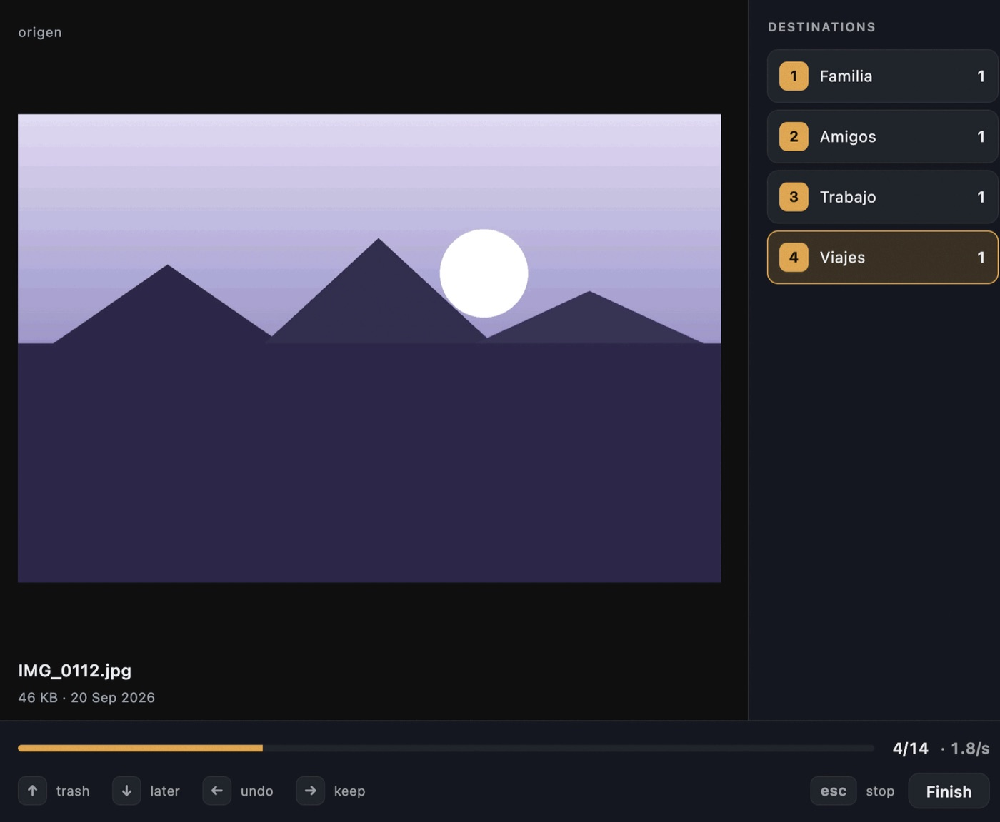
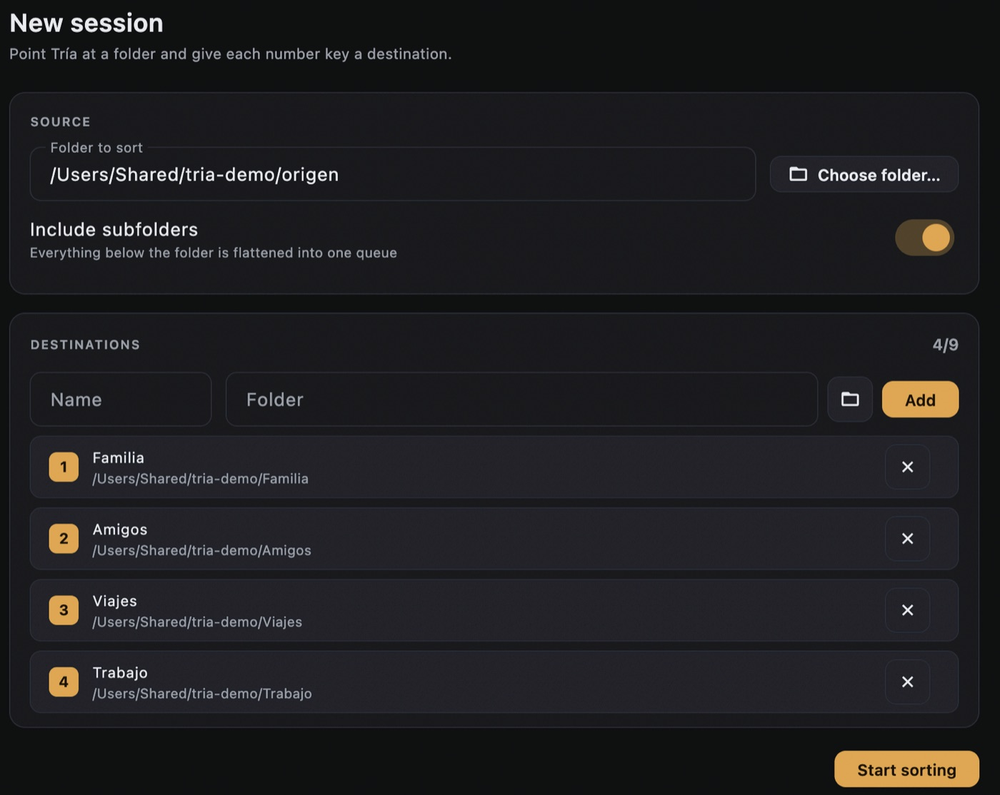
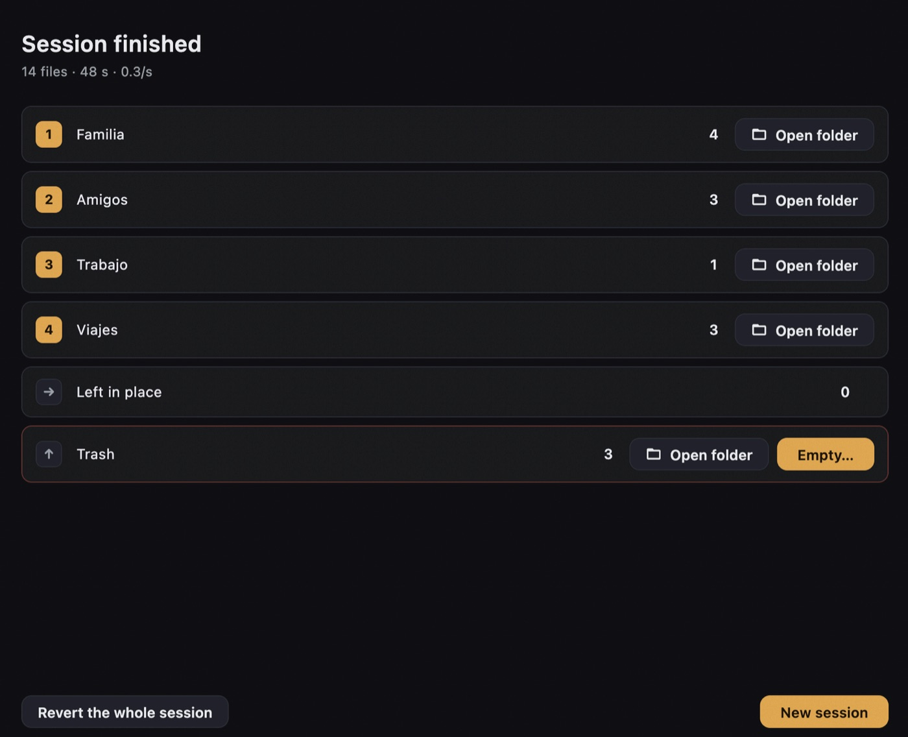
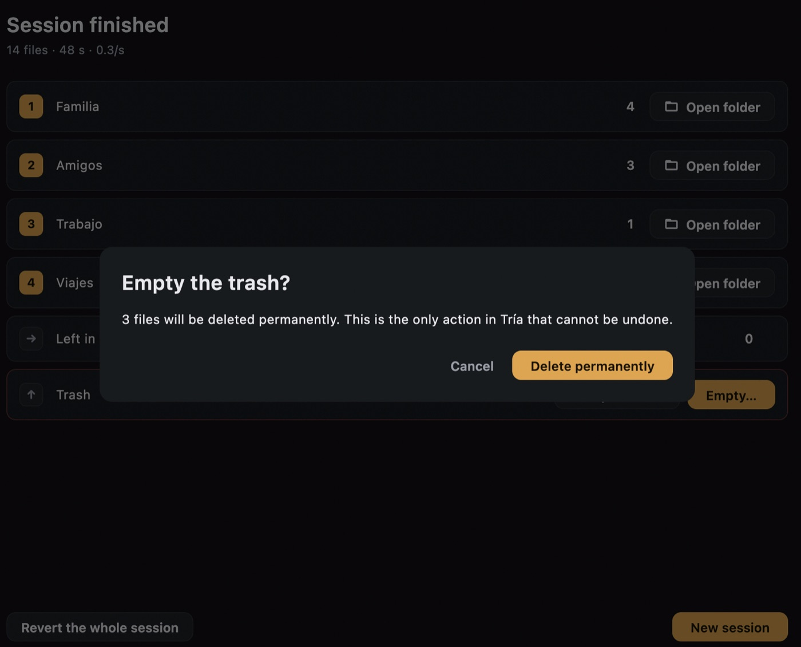

Tría
Una app de escritorio para clasificar miles de archivos en carpetas con una sola pulsación de tecla por archivo, y poder deshacer cualquier decisión, incluso días después.
- Cuándo
- 2026 · Proyecto personal
- Rol
- Todo el proyecto, en solitario
- Stack
- Enlaces
- tria Código, documentación y registro de decisiones
- Descargar la última versión Instaladores para macOS y Windows, sin firmar
De dónde viene
De un cambio de ordenador con miles de archivos sin orden, y de querer bajar las fotos de Drive a un SSD ya ordenadas y sin memes ni capturas. Abrir cada archivo, mirarlo y arrastrarlo a una carpeta no escala a varios miles. De ahí salen las dos exigencias de la app: ver el archivo y decidir sin soltar el teclado, y poder deshacerlo todo.
Qué es
- Hasta nueve carpetas de destino en las teclas
1–9; las flechas sirven para descartar, posponer, deshacer y saltar - Vista previa de imágenes, PDF y texto, con las tres siguientes precargadas
- Deshacer ilimitado, reanudar tras un cierre inesperado y revertir una sesión entera
- Papelera blanda: nada se borra hasta que tú lo decides
- Sin red y sin telemetría; 138 tests que el CI pasa en macOS y Windows
Cómo funciona, en vídeo
Patu abre la aplicación por dentro y enseña qué pasa cada vez que pulsas una tecla.
Transcripción del vídeo
Tría por dentro
Miles de archivos, y hay que decidir uno a uno. Tría lo hace con una sola tecla. Soy Patu, y te enseño cómo funciona por dentro.
Una tecla por archivo
Eliges una carpeta. Asocias hasta nueve destinos, y cada archivo se va con una pulsación. Flecha arriba: a la papelera blanda. Flecha abajo: lo pospone para el final. Derecha: lo deja donde está. E izquierda deshace la última decisión.
Cuatro capas
Por dentro son cuatro capas, y cada una solo depende de las que tiene debajo. El núcleo, el que toca tus archivos, es Dart puro: sin Flutter. Así se prueba entero sin arrancar la interfaz, y el CI lo pasa en macOS y en Windows.
La interfaz nunca espera al disco
Cada pulsación llama a decide: la pantalla avanza y el trabajo va a una cola. La cola mueve los archivos de uno en uno, en segundo plano. Un disco lento no frena tus decisiones. Y las siguientes imágenes ya se están leyendo a memoria, para que aparezcan sin espera.
El diario
El centro es un diario. Pulsas dos, y va a la cola. Antes de tocar el disco se apunta: pending. Luego se mueve el archivo. ¿Ya existe? Nunca se sobrescribe: se añade un sufijo. Y se apunta el resultado, con la ruta real. Pulsas izquierda para deshacer. No hay estado oculto: se lee el diario. La ruta dice qué traer de vuelta. Intención, operación, resultado: un write-ahead log para tus archivos.
Mover a otro disco
En el mismo disco, mover es un rename. Hacia otro disco, rename falla. Entonces Tría copia, comprueba que la copia pesa lo mismo, y solo entonces borra el original. Si falla, se descarta la copia. El original sigue ahí.
Borrar es apartar
Flecha arriba no borra: mueve el archivo a una papelera dentro de la propia carpeta. Vaciarla es la única acción irreversible de toda la aplicación, y la única que pide confirmación.
Revertir una sesión entera
Como cada movimiento quedó apuntado, se puede revertir una sesión entera, incluso días después. Se recorre del final al principio, para no recrear una colisión ya resuelta.
En resumen
Y nada sale de tu máquina: Tría no usa la red ni envía telemetría. El código es público, en GitHub. Soy Patu. Hasta la próxima.
Arquitectura
El núcleo que toca tus archivos es Dart puro, sin ninguna dependencia de Flutter, así que se prueba entero sin arrancar la interfaz.
Pulsa una pieza del diagrama para ver qué hace y con qué se conecta.
- Interfaz
- Tres pantallas en Flutter: configuración, triaje y resumen. No lee nada del disco mientras se dibuja, y ninguna animación bloquea una decisión: una pulsación nueva corta la transición en curso.
- Sesión
- El
SessionControllerrecibe cada decisión, la anota en el diario, avanza al siguiente archivo y encola el movimiento. También escucha los fallos de la cola, para que ninguno pase en silencio. - Diario
- La fuente de verdad: cada operación se escribe primero como intención (
pending) y después como resultado (doneofailed). De ahí salen deshacer, reanudar y revertir. - Cola
- Ejecuta los movimientos en segundo plano y de uno en uno. Nunca sobrescribe: si el nombre ya existe, añade un sufijo y el diario guarda el nombre real.
- Vistas previas
- Caché en memoria de ocho entradas que precarga los tres archivos siguientes, para que decidir rápido no deje esperas entre pulsación y pulsación.
Capturas




Más detalles del proyecto
El repositorio tiene la arquitectura, el registro de decisiones, la estrategia de pruebas, qué toca Tría en tu disco y el runbook de publicación.